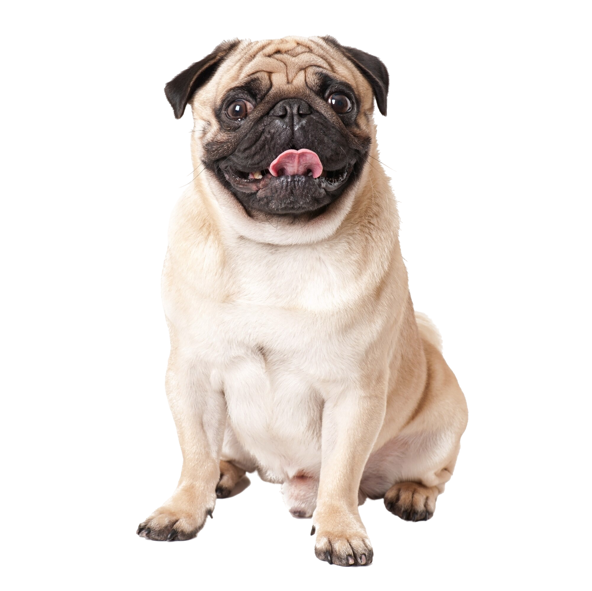
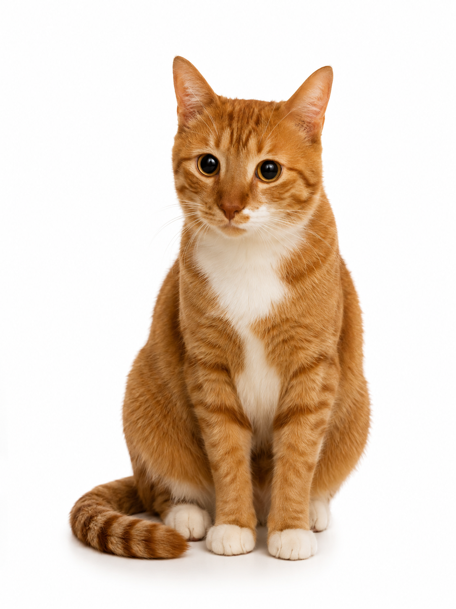
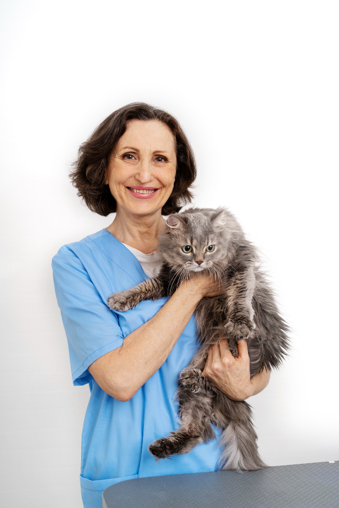
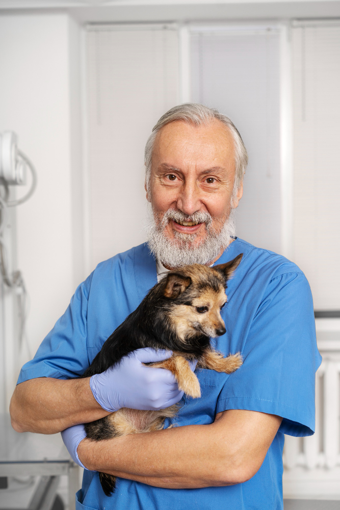

Consultas, vacinas e banho & tosa com quem realmente ama os animais!

Serviços completos para manter seu pet saudável e feliz!

Consultas veterinárias
Banho e tosa
Vacinas e exames
Na Central Pet, cada animal recebe atenção individualizada. Nossa equipe de veterinários realiza consultas de rotina, diagnósticos precisos e acompanhamento contínuo da saúde do seu pet. Trabalhamos com tecnologia moderna para garantir o bem-estar de cães, gatos e outros animais, oferecendo um atendimento humanizado e de confiança para toda a família.
Nosso serviço de banho e tosa vai além da aparência — é parte essencial da saúde do seu pet. Utilizamos produtos hipoalergênicos, seguros e de alta qualidade. Profissionais treinados cuidam de cada detalhe com paciência e carinho, garantindo que seu animal saia limpo, cheiroso e confortável. Agendamento rápido e horários flexíveis para sua conveniência.
Contamos com veterinários especializados no cuidado de aves domésticas e exóticas. Realizamos consultas, check-ups, vacinação e orientações sobre alimentação e ambiente ideal para cada espécie.
Gatos merecem atenção especial. Nossa clínica oferece um ambiente calmo e adaptado para felinos, com profissionais treinados para lidar com suas particularidades comportamentais e necessidades de saúde.
Também atendemos cavalos e outros grandes animais com estrutura adequada e equipe experiente. Oferecemos atendimento clínico, odontológico e cirúrgico com toda a segurança que seu animal merece.
Profissionais apaixonados por animais, dedicados ao seu pet!

Dra. Maisa Ballard
Cirurgiã
Especialista em Grande Porte

Dr. John Ballard
Cirurgião
Especialista em Grande Porte